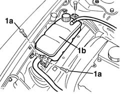
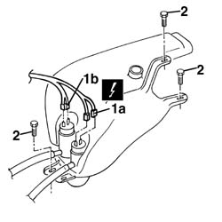
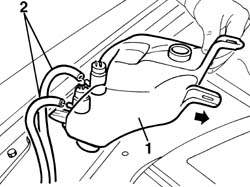

5050A10 windscreen washer fluid reservoir (in engine bay) - r+r
- Path
- Procedures > 50 AUXILIARY UNITS > 5050 SCREEN WASHERS AND HEADLAMP WASH/WIPE > 5050A windscreen and headlamp washer reservoir > 5050A10 windscreen washer fluid reservoir (in engine bay) - r+r
- Kind
- repair procedure (removal / refitting; the operation number is the code)
- Applies to
- all engines; all production periods
- Interactive page
- https://sloeber94.github.io/elrnDB-a156/en/#/3238358
Applies to: engines: 1.9 JTD 16v; all production periods
 Removing
Removing
 Refitting
RefittingApplies to: engines: 1.9 JTD 16v; all production periods
Applies to: engines: 1.6 TS , 1.8 TS, 1.9 JTD 8v , 1.9 JTD 16v, 2.4 JTD 10v; all production periods
1. Undo bolts (1a) securing the engine coolant reservoir and move the reservoir (1b).

Applies to: engines: 1.6 TS , 1.8 TS, 2.5 V6, 1.9 JTD 8v , 2.4 JTD 10v; all production periods
1. Disconnect pump electrical connections (1a), (1b).
 | Name | Connector |
|---|---|---|
1a | Windscreen washer pump motor |
| Name | Connector |
|---|---|---|
1b | Headlamp washer pump motor |
2. Undo the windscreen washer fluid reservoir bolts.

Applies to: engines: 1.6 TS , 1.8 TS, 2.5 V6, 1.9 JTD 8v , 2.4 JTD 10v; all production periods
1. Raise the tank
2. Disconnect the fluid supply pipes after having marked their position.
Remove the reservoir and recover the fluid.

Applies to: all engines; all production periods
Refitting
RemovingCheck that the reservoir is not damaged.
Place the reservoir in position, after having connected the pipes and fix it using the bolts.
Connect the electrical connections for the electric pumps.
Applies to: engines: 1.6 TS , 1.8 TS, 1.9 JTD 8v , 2.4 JTD 10v; all production periods
Fit the coolant reservoir and fix it using the bolts.
Applies to: engines: 1.6 TS , 1.8 TS, 2.5 V6, 1.9 JTD 8v , 2.4 JTD 10v; all production periods
Refill the windscreen washer fluid reservoir.
Applies to: engines: 1.9 JTD 16v; all production periods